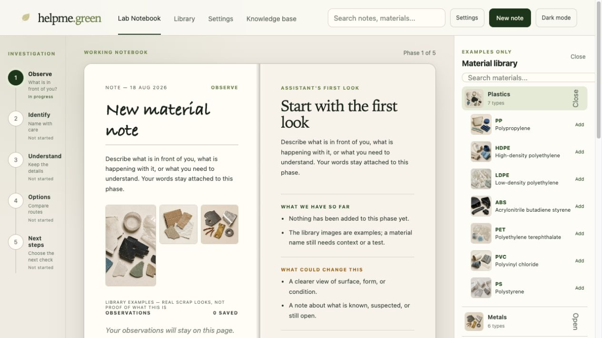
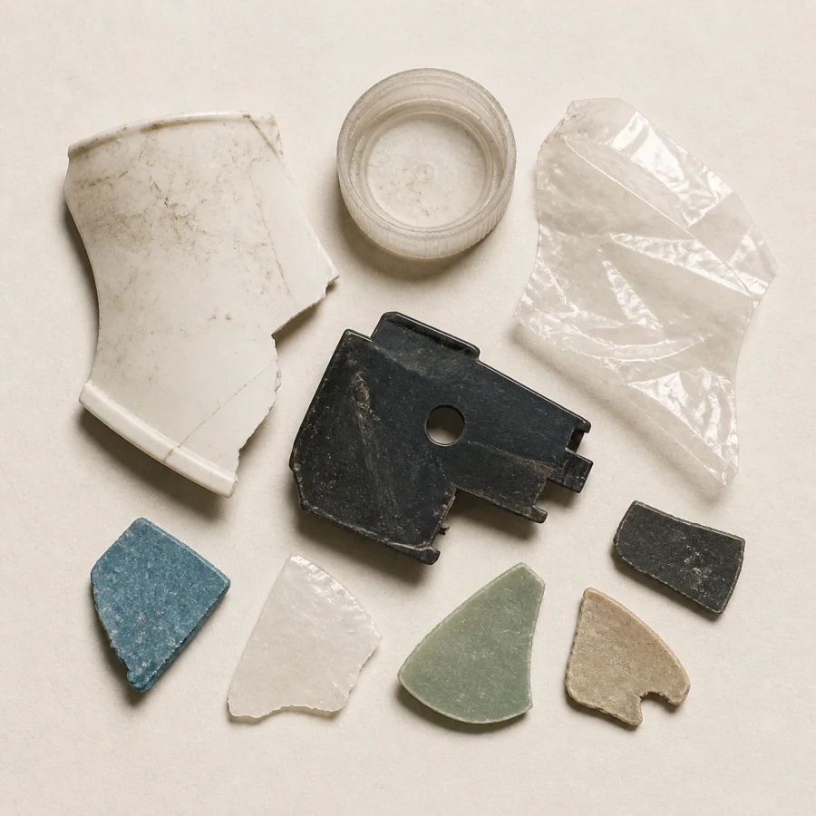
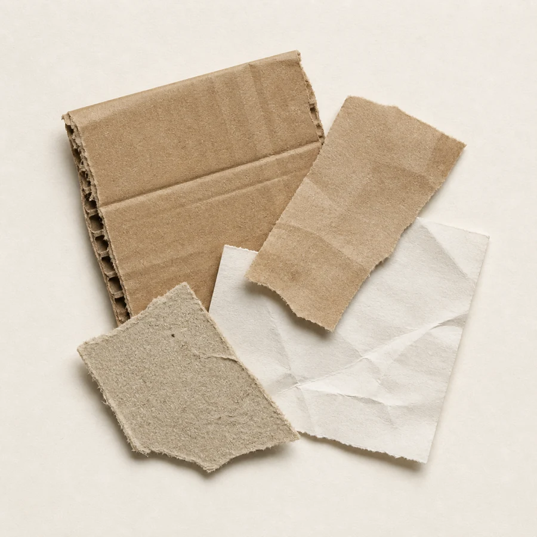
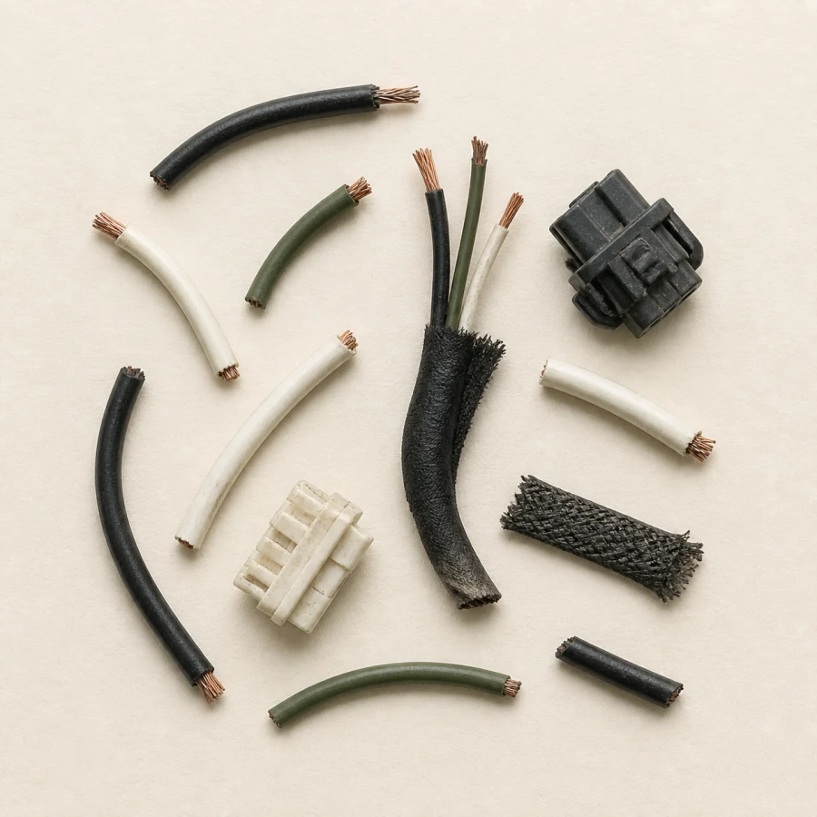

Pause & protect
Do not open, test, move, or process an unknown item just to gather information.
A field guide for curious hands
helpme.green is a local-first lab notebook for noticing what is in front of you, comparing references with care, and choosing what to verify next.

A slower, clearer loop
The notebook gives a natural place for observations, references, and open questions. It does not turn an uncertain sample into a confident label.
What is in front of you?
Name with care.
Keep the details.
Compare routes.
Choose the next check.
The material-handling framework
This is an orientation framework for new and experienced users. If a sample is hazardous, pressurised, contaminated, unknown, or unsafe to handle, stop and use the appropriate professional or site procedure.
Do not open, test, move, or process an unknown item just to gather information.
Record appearance, form, condition, origin, and attachments before guessing.
Keep known, suspected, assumed, and still-open details visibly distinct.
Use library examples and references as context, never as a diagnosis.
Check the relevant test, professional, site, legal, or route requirement first.
Built for a first look
Add an observation, attach the original sample photo when appropriate, and use the five phases to keep a thread of reasoning intact. Notes are autosaved in the browser so moving between phases does not erase the page.



The material library is contextual. The real sample, its history, and a suitable test still matter.
Useful, with clear edges
It can help you
It cannot decide for you
Local-first, provider-configurable
LocalAI, OpenRouter, and other compatible providers remain configuration choices. Native bundles contain the application and checked-in reference metadata, not a model, provider key, encryption key, local database, or raw source download.
Start where you are
Choose a release binary, run the local container, or install from source. All three routes open the same conversation-first browser surface.
View GitHub releases
The current candidate provides Linux amd64/arm64, macOS arm64/amd64, and Windows
amd64/arm64 archives. Download from GitHub Releases and verify the matching
SHA256SUMS file before extracting.
# macOS / Linux
./helpme-green --serve --host 127.0.0.1 --port 8080
# Windows PowerShell
.\helpme-green.exe --serve --host 127.0.0.1 --port 8080Then open http://127.0.0.1:8080. The bundle does not include a model or provider key.
Docker is the short-term supported deployment path. It binds to loopback and keeps runtime data in the named volume.
export HELPME_MASTER_KEY="$(python3 -c 'import base64,secrets; print(base64.urlsafe_b64encode(secrets.token_bytes(32)).decode())')"
docker compose up -d --build
curl http://127.0.0.1:8080/healthzConfigure a compatible LocalAI or OpenAI-compatible provider separately; keep keys outside the repository.
Use Python 3.11 or newer, install the development extras, and start the same local server.
python3 -m venv .venv
.venv/bin/pip install -e '.[dev]'
PYTHONPATH=src .venv/bin/python -m helpme_green \
--serve --host 127.0.0.1 --port 8080The repository includes the full test, lint, container, and release verification paths.
RC builds are for learning and controlled testing. They have automated checks, but they may occasionally break, change behavior, or expose unfinished edges. Stable macOS and Windows signing/notarization is still a release gate.